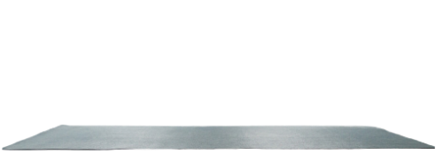
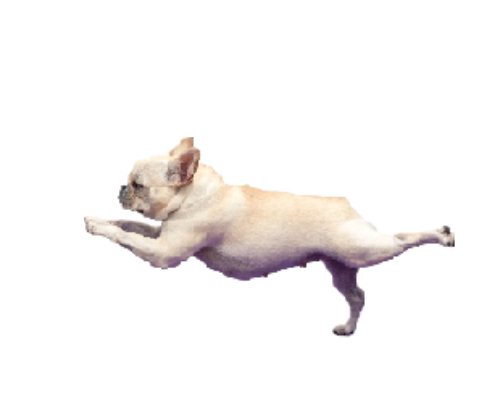

СОБАКА СУТУЛАЯ
Приведи свою сутулую подругу и получи скидку 20% на второй абонемент


Йога-терапия
Йога-терапия – это комплекс практик, направленных на оздоровление организма и восстановление психоэмоционального равновесия. Она помогает решить широкий спектр здоровенных проблем, начиная от болей в спине и заканчивая стрессами и депрессиями.
СОБАКАСУТУЛАЯ.РУ